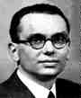

Kurt Gödel proved fundamental results about axiomatic systems, proving the Incompleteness Theorems .
Kurt Gödel attended school in Brünn, completing his school studies in 1923. His brother Rudolf Gödel said:-
Even in High School my brother was somewhat more one-sided than me and to the astonishment of his teachers and fellow pupils had mastered university mathematics by his final Gymnasium years. ... Mathematics and languages ranked well above literature and history. At the time it was rumoured that in the whole of his time at High School not only was his work in Latin always given the top marks but that he had made not a single grammatical error.
Kurt entered the University of Vienna in 1923. He was taught by Furtwängler, Hahn, Wirtinger, Menger, Helly and others. As an undergraduate he took part in a seminar run by Schlick which studied Russell's book Introduction to mathematical philosophy. Olga Tausky-Todd, a fellow student of Gödel's, wrote:-
It became slowly obvious that he would stick with logic, that he was to be Hahn's student and not Schlick's, that he was incredibly talented. His help was much in demand.
He completed his doctoral dissertation under Hahn's supervision in 1929 and became a member of the faculty of the University of Vienna in 1930, where he belonged to the school of logical positivism until 1938.
He is best known for his proof of Gödel's Incompleteness Theorems. In 1931 he published these results in Uber formal unentscheidbare Sätze der Principia Mathematica und verwandter Systeme . He proved fundamental results about axiomatic systems showing in any axiomatic mathematical system there are propositions that cannot be proved or disproved within the axioms of the system. In particular the consistency of the axioms cannot be proved.
This ended a hundred years of attempts to establish axioms to put the whole of mathematics on an axiomatic basis. One major attempt had been by Bertrand Russell with Principia Mathematica (1910-13). Another was Hilbert's formalism which was dealt a severe blow by Gödel's results. The theorem did not destroy the fundamental idea of formalism, but it did demonstrate that any system would have to be more comprehensive than that envisaged by Hilbert's.
Gödel's results were a landmark in 20th-century mathematics, showing that mathematics is not a finished object, as had been believed. It also implies that a computer can never be programmed to answer all mathematical questions.
Gödel met Zermelo in Bad Elster in 1931. Olga Taussky-Todd, who was at the same meeting, wrote:-
The trouble with Zermelo was that he felt he had already achieved Gödel's most admired result himself. Scholz seemed to think that this was in fact the case, but he had not announced it and perhaps would never have done so. ... The peaceful meeting between Zermelo and Gödel at Bad Elster was not the start of a scientific friendship between two logicians.
In 1933 Hitler came to power. At first this had no effect on Gödel's life in Vienna. He had little interest in politics. However after Schlick, whose seminar had aroused Gödel's interest in logic, was murdered by a National Socialist student, Gödel was much affected and had his first breakdown. His brother Rudolf wrote
This event was surely the reason why my brother went through a severe nervous crisis for some time, which was of course of great concern, above all for my mother. Soon afer his recovery he received the first call to a Guest Professorship in the USA.
In 1934 Gödel gave a series of lectures at Princeton entitled On undecidable propositions of formal mathematical systems. At Veblen's suggestion Kleene, who had just completed his Ph.D. this at Princeton, took notes of these lectures which have been subsequently published.
He returned to Vienna, married Adele Porkert in 1938, but when the war started he was fortunate to be able to return to the USA although he had to travel via Russia and Japan to do so.
In 1940 Gödel emigrated to the United States and held a chair at the Institute for Advanced Study in Princeton, from 1953 to his death. He received the National Medal of Science in 1974.
His work Consistency of the axiom of choice and of the generalized continuum-hypothesis with the axioms of set theory (1940) is a classic of modern mathematics.
His brother Rudolf, himself a medical doctor, wrote:-
My brother had a very individual and fixed opinion about everything and could hardly be convinced otherwise. Unfortunately he believed all his life that he was always right not only in mathematics but also in medicine, so he was a very difficult patient for doctors. After severe bleeding from a duodenal ulcer ... for the rest of his life he kept to an extremely strict (over strict?) diet which caused him slowly to lose weight.
Towards the end of his life Gödel became convinced that he
was being poisoned and, refusing to eat to avoid being poisoned,
starved himself to death.
Kurt Gödel was elected to the Royal Society of London in 1968.